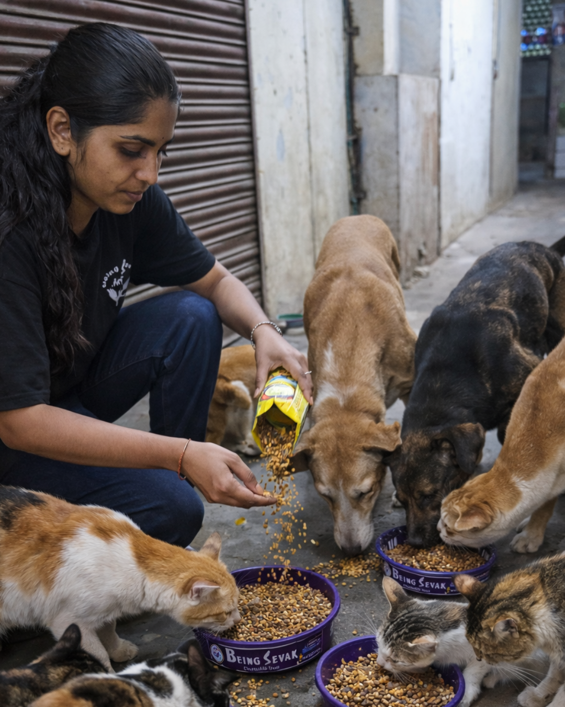
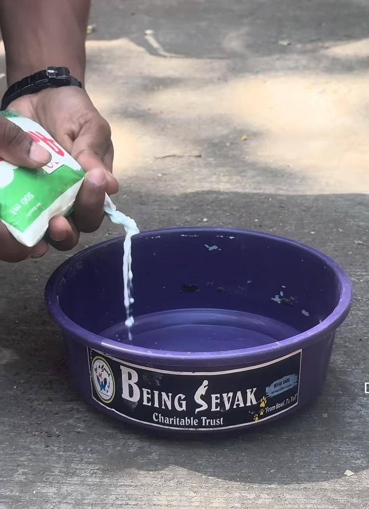
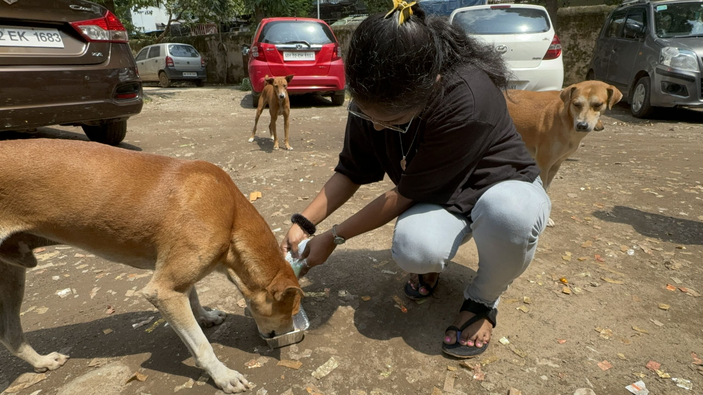
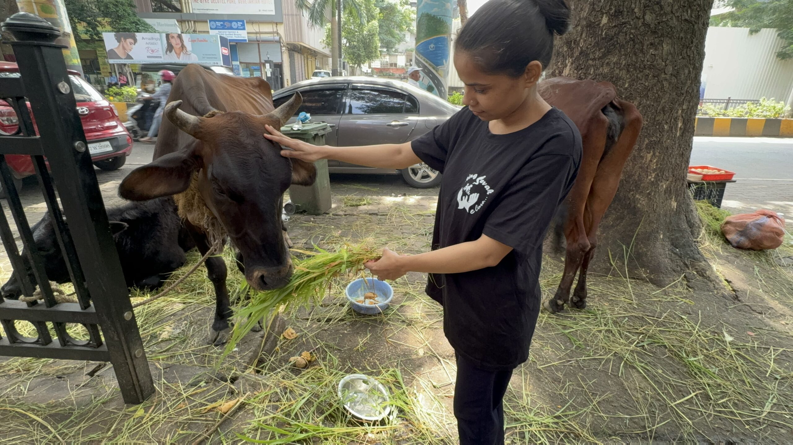
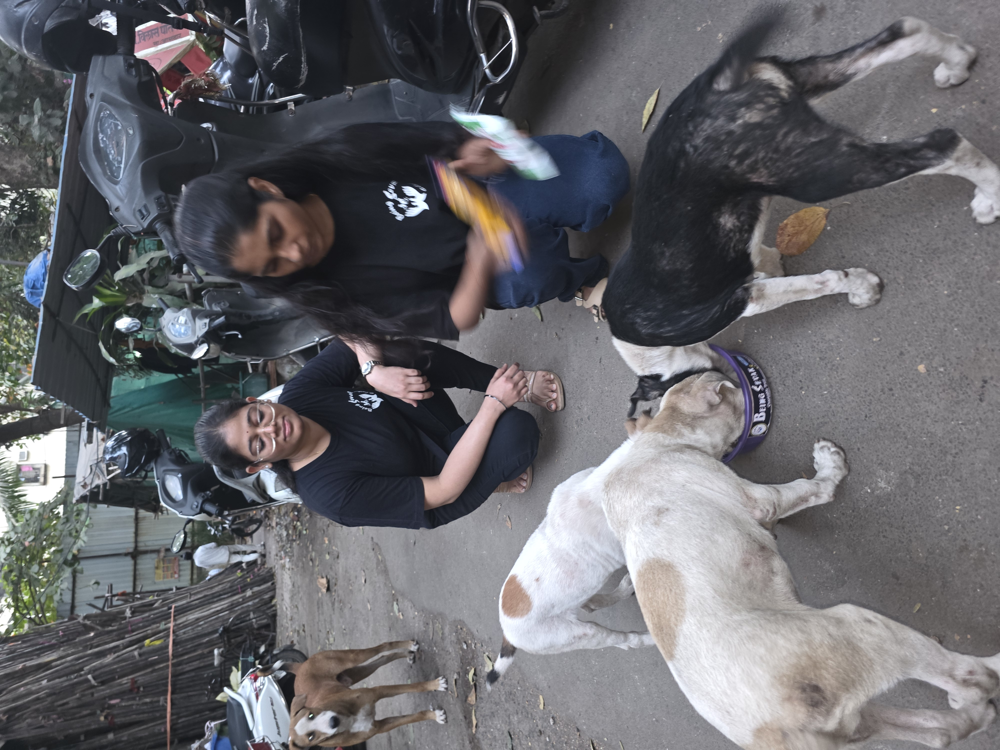
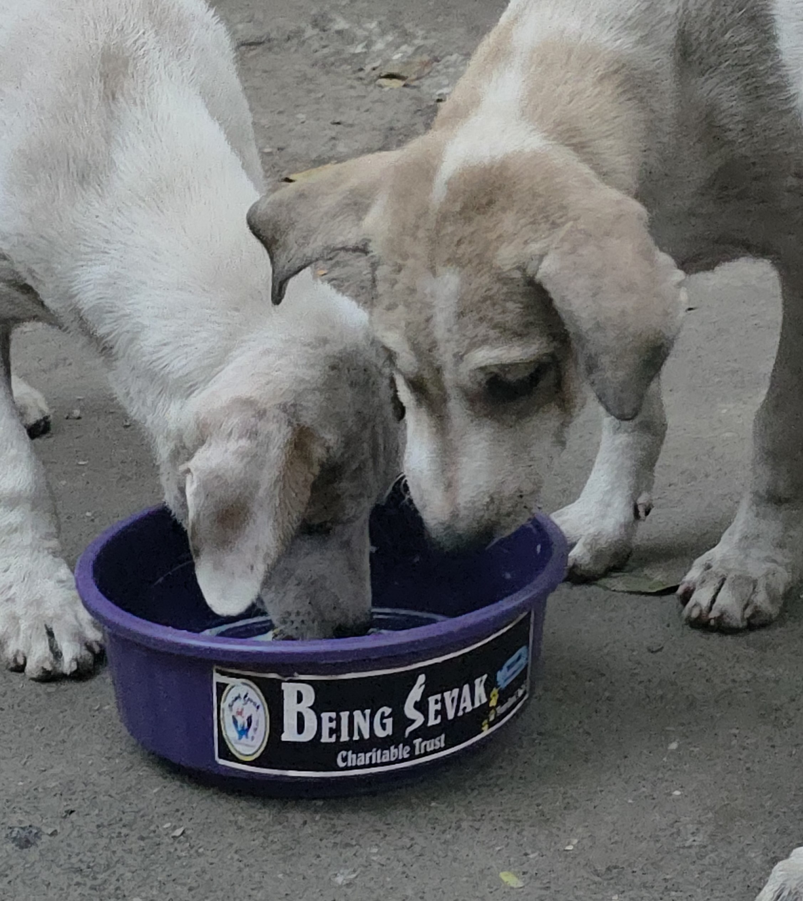

Mission Bezubaan by Being Sevak Charitable Trust supports stray animals with food, care, shelter and compassion. Every paw deserves love, safety and a better tomorrow.

Animals Fed
Care Support

Mission Bezubaan works to provide nutrition, safety and medical support for stray animals living on streets. Our goal is to create a kinder and more caring world for voiceless companions.
Nutritious meals for hungry street animals.
Emergency treatment and healthcare support.
Helping injured and abandoned animals.
Providing warmth, care and protection.
We regularly distribute food and water to hungry animals living on streets.
Our team rescues injured and helpless animals needing immediate attention.
We encourage kindness and awareness towards animals in communities.
Through continuous feeding drives and rescue efforts, Mission Bezubaan is creating hope and comfort for thousands of stray animals.
Meals Served
Animals Helped
Rescue Drives




Your support can provide food, medicine and rescue care for voiceless animals.
“Being Sevak is doing incredible work for visually impaired and needy families. Proud to support this mission.”
“Transparent work, genuine impact, and a wonderful team dedicated to helping people with dignity.”
“Every donation creates real change. Their food distribution drives truly touch lives.”
Get 50% Exemption on your donation under Section 80G of Income Tax Act 1961